iCoderAgent Documentation
Everything you need to set up and use iCoderAgent — a real AI coding agent that runs on your iPhone, iPad and Mac. Bring your own model key; your code and keys stay on your device.
Overview
iCoderAgent is an autonomous AI coding agent. You give it a task in plain language, and it plans the work, writes and edits files, runs real code, reads the results, and iterates until the task is done — right on your device. It ships with an embedded CPython runtime, so the agent can actually execute the Python it writes without any server round-trip.
It's bring-your-own-key (BYOK): you connect your own account with Anthropic (Claude), OpenAI, xAI (Grok) or another provider, and iCoderAgent uses that key directly. Your key is stored in the iOS Keychain and sent only to the provider you chose — never to us.
Install
iPhone & iPad: install iCoderAgent from the App Store. It runs fully on-device — no account is strictly required to start (a free tier lets you try it out).
Mac (companion): to let the agent build and run real projects on a computer, install the free desktop companion from the download page. See The desktop companion.
Your first agent run
- Open Settings → AI Provider and choose a provider (e.g. Claude).
- Paste your API key from that provider. It's saved to the Keychain.
- Go to the Terminal tab and type a task, e.g.
agent build a tip calculator web page. - Watch it work — it writes files, runs code, and shows you the result. Use the Preview tab to see HTML it builds.
Tip: prefix a message with agent to run the full coding agent. Other commands like ui (design a screen) and plain shell commands also work — type help to list them.
The five tabs
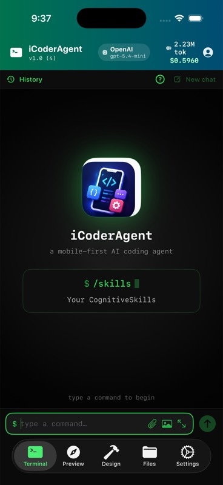
- Terminal — where you talk to the agent and run commands.
- Preview — renders HTML/web output the agent builds.
- Design — a lightweight surface for sketching screens and flows.
- Files — browse, view and edit the project's files.
- Settings — providers, keys, companion, models, skills, billing and this documentation.
Bring your own key (BYOK)
iCoderAgent doesn't resell AI usage. You connect your own provider account, and model calls are billed by that provider directly to you. This keeps your data private (keys and code never touch our servers) and lets you use whatever model you already pay for.
Enter keys under Settings → AI Provider. Keys live in the iOS Keychain and are transmitted only to the provider you selected.
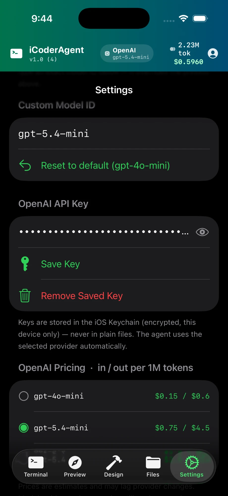
Supported providers
iCoderAgent works with a range of cloud and local providers. Switch anytime under Settings → AI Provider:
- Anthropic (Claude), OpenAI (GPT), xAI (Grok) — the primary cloud providers.
- Google Gemini, GitHub Models, Groq, Azure, OpenRouter, DeepSeek, Moonshot, Hugging Face — additional OpenAI-compatible options.
- Ollama, Apple MLX — local servers you run yourself (see below).
- On-device (Edge) — models that run entirely on your iPhone/iPad, no key and no network needed.
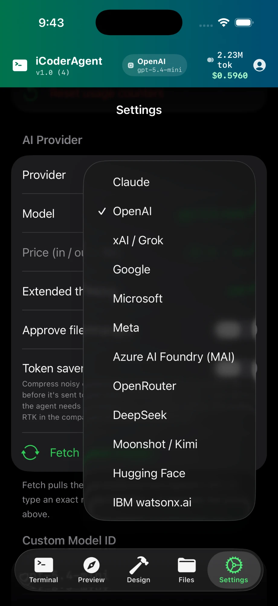
Choosing a model
Each provider offers a list of models in Settings. You can also type a custom model ID if you want a specific one that isn't listed. For coding, the strongest general models (latest Claude / GPT / Grok) give the best results; smaller/cheaper models are fine for quick edits.
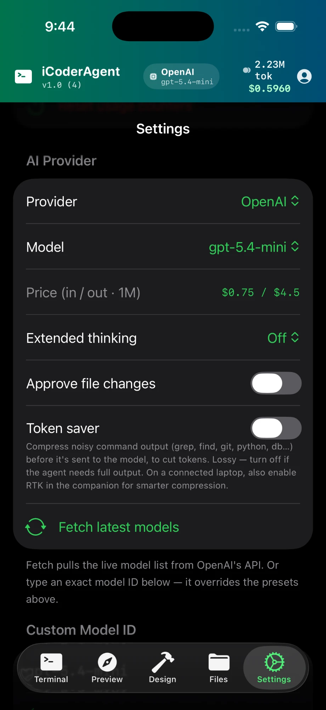
How the agent works
iCoderAgent runs a genuine agent loop, not a single chat reply. Each turn it can call tools — write a file, read a file, run a command, search code, take a screenshot — then read the results and decide what to do next, repeating until your task is complete. It commits checkpoints as it edits, so work isn't lost.
Plan mode
Use plan <task> to have the agent think through an approach and lay out the steps before writing any code. Good for larger changes where you want to review the plan first.
Loop mode (autonomous)
Use loop <goal> to set a goal once and let the agent drive it to completion — it discovers what's needed, plans, builds, verifies against a definition of done, and iterates on any gaps until it passes or a cycle cap is reached. Best for an end-to-end goal you want driven without step-by-step prompting.
Sub-agents & pipelines
The agent can delegate parts of a task to sub-agents, run several independent subtasks in parallel, or run a plan → build → review pipeline — all to work faster and check its own output. These run automatically when the agent decides they help; you don't need to manage them.
Token saver
iCoderAgent compacts noisy tool output on-device before it reaches the model, so you spend fewer tokens per task without losing the information the agent needs. It's on by default.
On-device (Edge) models
iCoderAgent can run small language models entirely on your iPhone or iPad — no API key, no network, no per-token cost. Download a model under Settings → On-Device Models (e.g. Gemma or Qwen variants). On-device models are slower and less capable than the top cloud models, but they're private and free, and they don't count against your conversation quota.
On-device models need a recent device with enough memory. Larger models download several GB; pick a size that fits your device.
Ollama
If you run Ollama on your computer, point iCoderAgent at it: choose Ollama as the provider and enter the server's URL (your computer's LAN IP, e.g. http://192.168.1.5:11434). The phone can't reach localhost, so use the LAN address or a tunnel.
Apple MLX
On an Apple-silicon Mac you can run mlx_lm.server and connect iCoderAgent to it: choose MLX as the provider and enter the server URL (e.g. http://192.168.1.5:8080). Like Ollama, this runs the model on your Mac and is reached over your local network.
The desktop companion
The companion is a small app for macOS, Windows and Linux that lets the agent build, run and test real projects on your computer, driven from your phone. iOS can't run arbitrary shell tools (compilers, npm, pytest, Docker), so the companion executes those on your machine and streams the results back over a secure relay.
Download it from the download page. macOS is a signed, notarized app; Windows and Linux builds are also available.
Connect a computer
- Install and open the companion on your computer.
- Sign in with the same account you use in the app, and pick the project folder the agent should work in.
- In iCoderAgent, go to Settings → Remote and select your computer — it appears automatically once the companion is connected.
No tunnels, port forwarding or extra networking are needed — the companion connects out to the relay on its own.
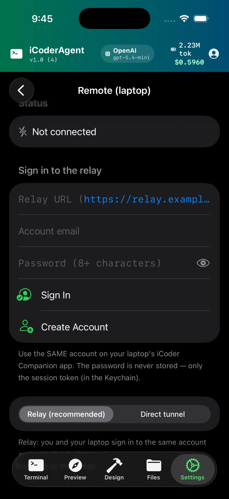
Remote mode — what runs where
When a computer is connected, file edits are kept in sync on both the phone and the computer, and shell commands (run, tests, builds) execute on the computer with its full toolchain. Reads come from the local copy so the app stays responsive. When no computer is connected, the agent works on-device with the embedded Python only.
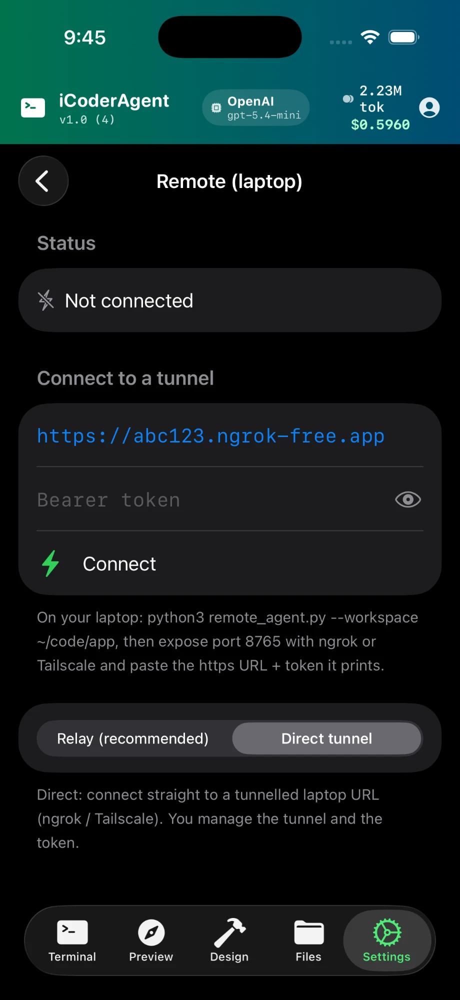
SSH hosts
Beyond the companion, you can register additional machines as SSH hosts (Settings → Remote Hosts) and have the agent run commands on them by alias. Useful for driving a server or a second machine alongside your main companion.
CognitiveSkills
Skills are reusable Markdown playbooks the agent can load on demand — a documented procedure for something you do often (a project's conventions, a review checklist, a build recipe). Manage them under Settings → CognitiveSkills. The agent advertises each skill's name and description and pulls in the full text only when it's relevant.
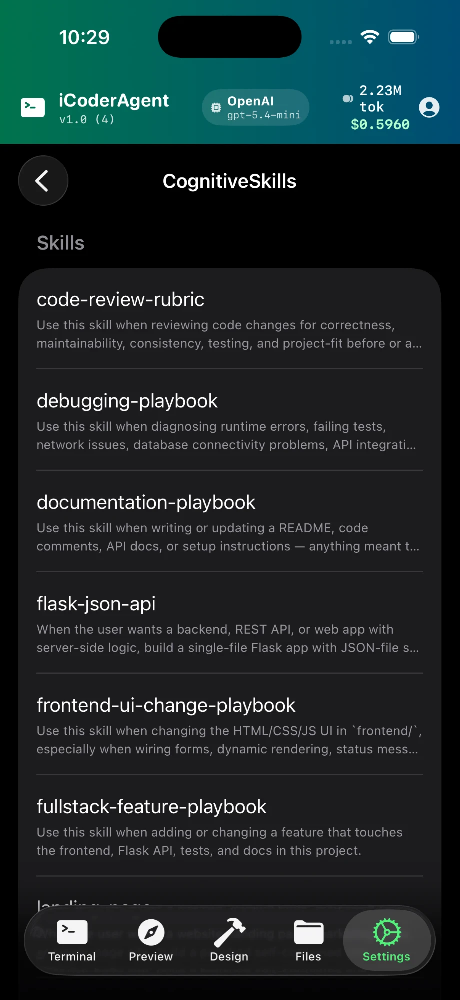
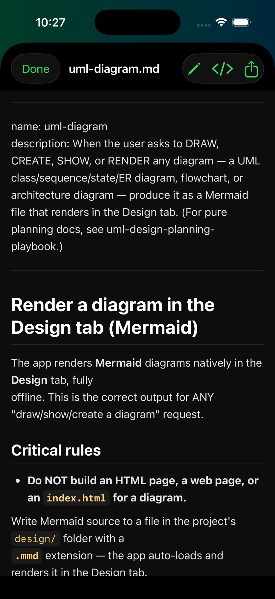
MCP servers
iCoderAgent supports the Model Context Protocol (MCP), an open standard for giving an agent extra tools (GitHub, Linear, docs, hosted tool servers, and more). Add servers under Settings → Connections (MCP):
- Remote (HTTP) servers work directly on your device.
- Local (stdio) servers run on your connected computer via the companion.
- Use Browse Community Servers to search the public MCP registry and add one — you always review exactly what's being added first.
Each server's tools appear to the agent as mcp__<alias>__<tool>.
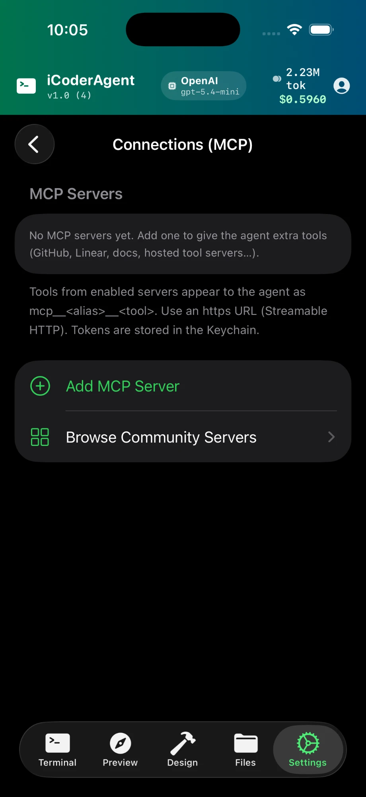
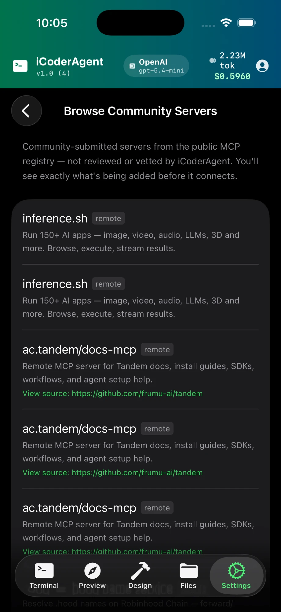
Community MCP servers are not vetted by iCoderAgent. A local (stdio) server runs code on your computer — only add servers from publishers you trust.
Self-authored tools
When it hits a repeated need the built-in tools don't cover, the agent can write a new tool for itself — but never silently. It shows you the exact code and waits for your approval before the tool is saved and becomes callable. Approved tools are scoped to that project and can be removed anytime. This lets the agent genuinely extend itself while keeping you in control of any code that runs.
Projects & Files
The agent works inside a project folder. On iPhone/iPad this is on-device; with a companion connected it maps to the folder you chose on your computer. Use the Files tab to browse, view and edit files directly.
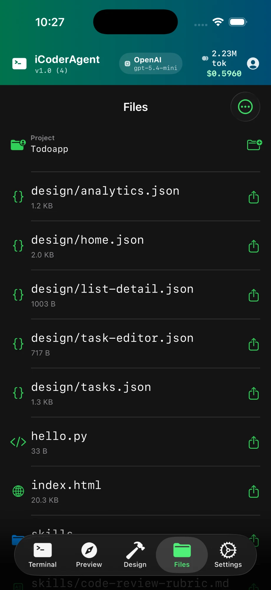
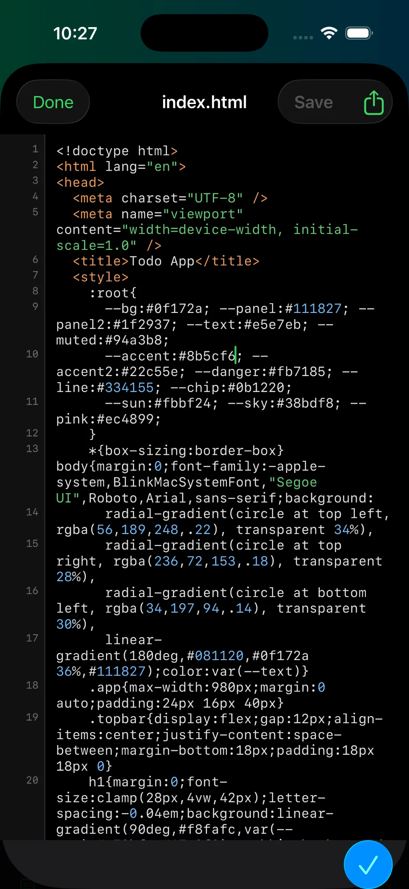
Preview & Design
The Preview tab renders HTML the agent builds so you can see and verify the result. When you ask for a screenshot, the agent captures the rendered page and — if the page throws a runtime error — reports the error alongside the image, so a blank screen comes with an explanation. The Design tab is a lightweight surface for sketching screens and flows.
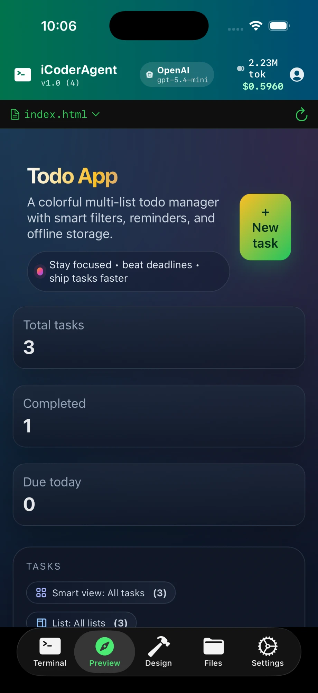
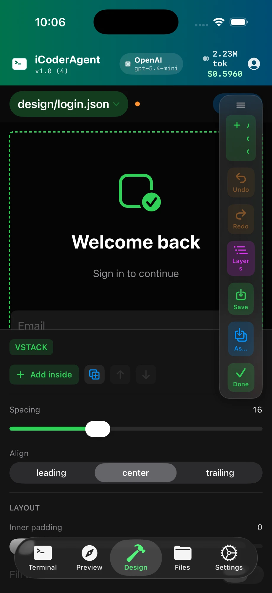
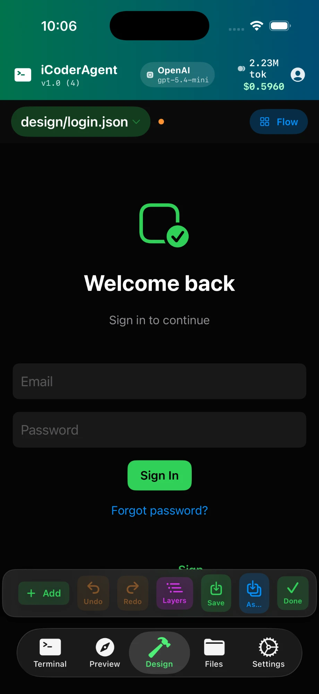
Databases & Git
The agent can run SQL against saved database connections and use Git for version control (on-device via a built-in Git, or the real git on a connected computer). New projects are scaffolded with sensible defaults (a .gitignore, .env and README.md), and the agent auto-commits checkpoints as it edits so work isn't lost.
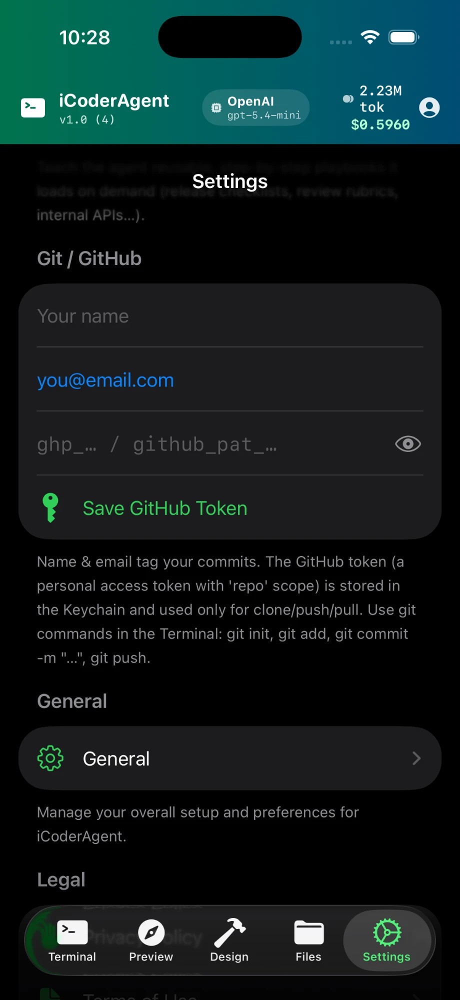
Plans & conversations
Because iCoderAgent is BYOK, subscriptions cover app usage (a monthly quota of conversations), not the AI model itself — you pay your provider directly for model usage. A "conversation" is one task you start with the agent.
- Free — 10 conversations to try it out, no chat history retained.
- Starter — 500 conversations / month, 100 chats of history.
- Growth — 1,550 conversations / month, 300 chats of history.
- Scale — 5,000 conversations / month, 1,000 chats of history.
Prices are shown in the App Store in your local currency. Unused conversations roll over while your subscription stays active. On-device (Edge) model use does not count against your quota. Manage or cancel anytime in your Apple subscription settings.
Agent tool reference
The agent chooses tools automatically — you never call these directly — but it helps to know what it can do. Type help in the Terminal for the full, always-current list with examples.
write_file / str_replaceCreate and edit filesread_file / list_filesRead the projectgrep / find / find_definitionSearch code & symbolsrun / run_testsRun commands & testsget_diagnosticsBuild / lint errorsdebugScripted pdb / lldb / nodescreenshot / preview_jsSee & verify the UIgitVersion controldbRun SQLweb_search / web_answerLook things up onlineuse_skillLoad a CognitiveSkilltask / pipeline / loopDelegate & orchestratessh_runRun on a registered hostpropose_toolAuthor a new tool (with your approval)Troubleshooting
"No computer is connected" when running commands
Shell commands (compilers, npm, pytest, Docker) need a connected computer. Install the companion and connect it under Settings → Remote. On-device, only the embedded Python standard library is available.
The agent hit the paywall
Every account gets a free trial of 10 conversations. After that, subscribe, or switch to an on-device (Edge) model, which doesn't count against the quota.
A local model provider says the URL isn't set
For Ollama/MLX, enter your computer's LAN IP (not localhost) in Settings, since the phone reaches it over your network.
Still stuck?
See the Support page or email support@aidigiapps.com.
Privacy & data
Your API keys are stored in the iOS Keychain and sent only to the provider you chose. Projects, chat history and usage logs stay on your device — delete the app and they're gone. There are no advertising SDKs, no third-party analytics and no cross-app tracking. Read the full privacy policy.